Azure Networking Specialty Daily Interactive Study Report
Report date: September 7, 2026 · Current alignment: Microsoft Certified: Azure Network Engineer Associate / AZ-700.
Today’s 12 lessons
- ExpressRoute Microsoft-peering QoS 941 words
- P2S VPN with RADIUS 820 words
- ExpressRoute with S2S VPN backup 753 words
- ExpressRoute Local 728 words
- Bring Your Own IP 763 words
- Subnet delegation 726 words
- Load Balancer outbound rules 730 words
- Application Gateway rewrites 707 words
- Front Door caching 739 words
- Bastion native client 751 words
- AVNM security admin rules 719 words
- Azure Firewall explicit proxy 749 words
ExpressRoute Microsoft-peering QoS: DSCP, queuing, and what Azure actually honors
Why it matters
Quality of service on ExpressRoute is easy to misunderstand because the private circuit itself does not create a universal Azure-wide priority queue. Microsoft’s published QoS guidance is specifically about Microsoft peering traffic such as Teams and Skype for Business workloads. Azure private-peering packets can retain their DSCP bits, but Microsoft does not use those markings to prioritize the traffic across its private-peering network. That distinction matters operationally: marking a database packet EF on a private peering does not buy a premium forwarding class inside Microsoft’s network. For Microsoft peering, by contrast, the customer edge is expected to classify the traffic correctly, preserve supported DSCP values, and provide multiple queues so voice and interactive media are protected from local congestion before the packets enter the Microsoft edge.
Architecture
The control boundary is the Microsoft peering BGP relationship and the customer-owned QoS policy on the CE/WAN path. ExpressRoute exposes the Microsoft peering and route exchange, but there is no Azure Resource Manager object named “ExpressRoute QoS policy” that you attach to a circuit. Classification and queuing occur on the customer network equipment. Microsoft documents the classes it expects: EF 46 for voice, AF41 34 for video/VBSS, AF21 18 for application sharing, AF11 10 for file transfer, and CS0 for other traffic. Unsupported markings such as AF31 should be rewritten to zero rather than carried as if they represented a Microsoft-supported class. The data plane is therefore a sequence: application marks or enterprise edge classifies, CE places packets into local queues, ExpressRoute Microsoft peering carries the marked traffic, and Microsoft services receive the supported classes. The most important capacity lesson is that QoS is not extra bandwidth; it is a congestion-management policy. If the circuit or provider path is chronically undersized, priority queues protect latency-sensitive traffic by allowing lower-priority traffic to experience more delay or drops.
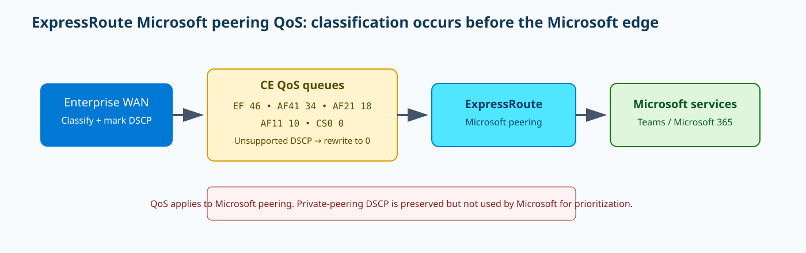
{kind=link}
Prerequisites and implementation
First prove that the circuit is provisioned and that Microsoft peering is the routing domain you are actually using. If your provider supplies managed Layer 3, the provider may own the peering configuration; otherwise Azure CLI can create or inspect it. The QoS queue itself must be configured on the CE/router because Azure does not expose a per-circuit QoS configuration API. The following Azure CLI establishes the Microsoft-peering context that QoS applies to; the advertised public prefix must be legitimately registered to you and the peer subnets must be dedicated /30s. Replace every bracketed value with the real circuit, ASN, VLAN, peer addressing, and public prefix. After peering is up, implement the DSCP classification and queue policy on the CE using the router vendor’s supported QoS syntax.
az network express-route peering create \
--resource-group <rg> \
--circuit-name <circuit> \
--peering-type MicrosoftPeering \
--peer-asn <customer-asn> \
--primary-peer-subnet <public-/30-primary> \
--secondary-peer-subnet <public-/30-secondary> \
--vlan-id <vlan-id> \
--advertised-public-prefixes <registered-public-prefix>
az network express-route peering show -g <rg> --circuit-name <circuit> --name MicrosoftPeering -o jsoncClassification, NAT, and queue design
Microsoft peering normally also requires source NAT when private enterprise addresses access Microsoft public services. Keep NAT and QoS conceptually separate. NAT determines the source address Microsoft sees; QoS determines how the customer network schedules packets under contention. A Teams voice flow might be translated from 10.20.1.15 to a registered public address while retaining EF 46. Monitor the NAT pool as well as the QoS queues because NAT exhaustion can look like a media-quality incident even when the EF queue has no drops. A useful enterprise policy is to classify by trusted application identity or well-defined media ports at the WAN edge, remark untrusted endpoint markings, dedicate an EF queue to voice, and cap lower-priority classes rather than allowing every host to self-declare itself as expedited forwarding. If you use a service provider between the CE and Microsoft, confirm the provider preserves the supported DSCP values end to end; otherwise a perfect on-prem policy can be erased before packets reach the ExpressRoute handoff.
Enterprise scenario
A global contact-center team uses ExpressRoute Microsoft peering for Teams media and notices call quality collapses only when a nightly file-transfer job saturates the WAN edge. The circuit is not down and the Teams service is reachable. A CE capture shows voice packets correctly marked EF 46, but the router has only one FIFO queue, so the markings never influence local scheduling. The team adds a dedicated EF queue, separate interactive classes, and a constrained lower-priority file-transfer class while preserving Microsoft’s supported DSCP values. Under the next congestion test voice latency remains stable while file transfer slows. The result shows where QoS creates value: it protects scarce customer/provider egress capacity before traffic enters Microsoft peering; it does not manufacture bandwidth inside Azure.
Verification
Verification needs evidence from both Azure and the CE. Azure proves the routing domain is enabled; the CE proves packets are entering the intended queues with the intended markings. A successful peering typically reports provisioningState Succeeded and peeringType MicrosoftPeering. On the router, generate a known Teams voice call and inspect class counters. EF packet counters should increase while drops remain zero or low under normal load. A packet capture at the handoff should show DSCP 46 on RTP voice packets. The representative output below is illustrative rather than byte-for-byte vendor output.
az network express-route peering show -g <rg> --circuit-name <circuit> --name MicrosoftPeering --query "{state:state,provisioning:provisioningState,type:peeringType}" -o json
show policy-map interface <wan-interface>{"state":"Enabled","provisioning":"Succeeded","type":"MicrosoftPeering"}
VOICE-EF: dscp ef (46), packets:184233, drops:0
VIDEO-AF41: packets:93311, drops:42Troubleshooting
A common failure is “voice is marked EF on the endpoint but quality is still bad.” Do not start by changing Azure. Capture at the CE egress and inspect the actual queue. If the capture shows CS0, classification or remarking failed before ExpressRoute. If EF counters increase but the EF queue itself drops, the priority queue or link is undersized. If the CE shows clean EF forwarding but the service path is unstable, inspect provider DSCP preservation, circuit utilization, Microsoft-service routing, and NAT. Another failure is using Microsoft QoS guidance on private peering and expecting Azure to prioritize arbitrary VNet traffic. In that case the configuration is conceptually wrong, not syntactically wrong. Corrective action is to design local WAN QoS for private-peering congestion and treat Microsoft’s ExpressRoute QoS classes as Microsoft-peering behavior only.
az network express-route peering show -g <rg> --circuit-name <circuit> --name MicrosoftPeering -o table
show policy-map interface <wan-interface>MicrosoftPeering: Enabled / Succeeded
VOICE-EF packets: 0
DEFAULT packets: 3104421
packet capture: RTP DSCP = 0Scenario: ExpressRoute NAT requirements
Substantive prose: 941 words
Point-to-Site VPN with RADIUS: authentication path, address pools, and high availability
Why it matters
RADIUS-backed Point-to-Site VPN is useful when an enterprise already has centralized authentication and wants Azure VPN Gateway to act as a RADIUS client instead of managing client certificates or Microsoft Entra authentication for that remote-access population. The key design insight is that a successful VPN gateway deployment does not imply a successful authentication path. The user’s tunnel negotiation and the gateway-to-RADIUS Access-Request are separate conversations. If the VPN Gateway cannot reach the RADIUS server, every user can fail authentication even though the gateway is provisioned, its public IP answers, and the client configuration is otherwise correct. This makes RADIUS reachability, shared-secret consistency, server availability, and return routing first-class parts of the VPN architecture.
Architecture
The remote client first establishes the supported VPN transport to the Azure VPN Gateway. During authentication, the gateway sends RADIUS requests to the configured server address and waits for Access-Accept or Access-Reject. If accepted, the client receives an address from the configured Point-to-Site pool and routes are installed according to the client package and gateway topology. The client pool must not overlap the Azure VNet, the user’s local network, or on-premises ranges the user needs to reach. Microsoft supports a secondary RADIUS server for resilience, and production deployments should avoid making a single RADIUS VM the only authentication dependency. A subtle hybrid caveat is that an on-premises RADIUS server cannot be reached from VPN Gateway through ExpressRoute for this authentication flow; design the RADIUS placement and connectivity according to Microsoft’s supported path. For IKEv2 plus RADIUS, Microsoft documents EAP-based authentication constraints, so the identity method must be checked alongside tunnel protocol support.
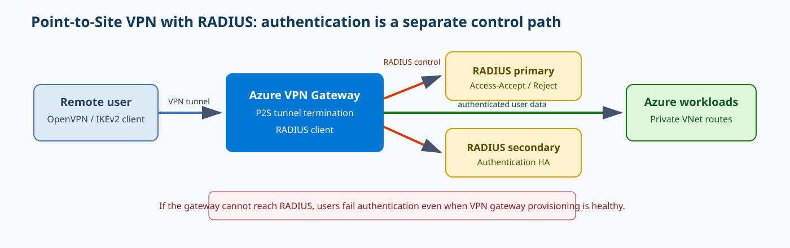
{kind=link}
Prerequisites and implementation
PowerShell is the clearest officially documented automation surface for adding a Point-to-Site address pool and RADIUS settings to an existing route-based VPN gateway. Create a SecureString for the shared secret, retrieve the gateway, and apply the client pool, protocol, RADIUS address, and secret. The example uses OpenVPN because it is broadly useful across clients. Before applying it, make sure 172.16.201.0/24 is unused everywhere the client must communicate. For active-active gateways, follow the current portal/API guidance for multiple RADIUS servers and remember that Point-to-Site on active-active uses an additional public IP beyond the two gateway-instance IPs.
$SecureSecret=Read-Host -AsSecureString -Prompt "RadiusSecret"
$Gateway=Get-AzVirtualNetworkGateway -ResourceGroupName "<rg>" -Name "<vpn-gateway>"
Set-AzVirtualNetworkGateway -VirtualNetworkGateway $Gateway -VpnClientRootCertificates @()
Set-AzVirtualNetworkGateway -VirtualNetworkGateway $Gateway -VpnClientAddressPool "172.16.201.0/24" -VpnClientProtocol "OpenVPN" -RadiusServerAddress "<radius-private-ip>" -RadiusServerSecret $SecureSecretAuthentication and route behavior
Do not troubleshoot a RADIUS reject as if it were a routing failure. A reject means the gateway reached the RADIUS server and the server made an authentication/policy decision. A timeout means the gateway did not receive a response, which points toward reachability, firewall rules, the RADIUS service, or shared-secret mismatch depending on server logs. After Access-Accept, routing becomes the next layer. The user may connect successfully but be unable to reach an on-premises subnet because the client package lacks a route, the gateway has no path, or the return route does not include the P2S address pool. If on-premises firewalls only know VNet prefixes and not the P2S pool, return packets can disappear even though the Azure side shows Connected. Export and redistribute the client routes deliberately rather than assuming a remote user is “inside the VNet.”
Enterprise scenario
An enterprise remote-access team has two RADIUS servers in separate failure domains and a route-based VPN Gateway used by support engineers. During a planned RADIUS maintenance window, the team validates that new connections continue authenticating against the secondary server while established VPN sessions remain usable. It also tests a user connecting from a hotel network whose local subnet happens to use 192.168.1.0/24. Because the Azure P2S pool is 172.16.201.0/24 and does not overlap the hotel, VNet, or data-center prefixes, route installation remains deterministic. The runbook captures the RADIUS request source, Access-Accept result, assigned client IP, Azure route, and on-premises return route so authentication and forwarding evidence are not conflated.
Verification
Validate configuration state and then perform a real login. The gateway’s Point-to-Site configuration should show the expected pool, protocol, and RADIUS address. On the RADIUS server, an accepted login should produce an Access-Accept for the gateway client. On the workstation, the VPN adapter should receive an address from 172.16.201.0/24 and the route table should include the Azure prefixes. A successful result is the combination of authentication, assigned address, and useful routes—not merely a green gateway resource.
$gw=Get-AzVirtualNetworkGateway -ResourceGroupName "<rg>" -Name "<vpn-gateway>"
$gw.VpnClientConfiguration | Format-List
Get-NetIPConfiguration
route printVpnClientAddressPool: 172.16.201.0/24
VpnClientProtocols: OpenVPN
RadiusServerAddress: 10.51.0.15
RADIUS: Access-Accept user=alice
VPN adapter: 172.16.201.12
Route: 10.50.0.0/16 via VPNTroubleshooting
Use the RADIUS log to divide authentication failures into “request never arrived,” “request arrived and was rejected,” and “request arrived but response could not return.” If the server sees nothing, validate that the VPN Gateway can reach the server through a supported path and that UDP 1812/1813 or your configured RADIUS ports are allowed. If the server logs an invalid authenticator, synchronize the shared secret. If it logs Access-Reject, investigate identity policy rather than network routes. If the user is authenticated and assigned a P2S IP but applications fail, inspect the client route table and the return path to the P2S pool. This sequencing prevents a common mistake: rebuilding the VPN gateway when the actual problem is a RADIUS policy or missing return route.
$gw=Get-AzVirtualNetworkGateway -ResourceGroupName "<rg>" -Name "<vpn-gateway>"
$gw.VpnClientConfiguration | Format-List
ipconfig
route print
Test-NetConnection <private-target-ip> -Port 443RADIUS server: no Access-Request entries from Azure VPN Gateway
Client: Authentication failed / timeoutExpressRoute with Site-to-Site VPN backup: route preference, failover, and state loss
Why it matters
A Site-to-Site VPN can provide a lower-cost backup path for workloads that normally use ExpressRoute private peering. The design is valuable when the application can tolerate the VPN’s lower or less predictable throughput during a circuit outage. It is not a universal ExpressRoute backup. Microsoft explicitly limits this pattern to private-peering-connected virtual networks; there is no equivalent VPN failover for Microsoft peering. The difficult part is not making both gateways exist. The difficult part is ensuring route preference is deterministic during steady state, that the VPN is sized for the traffic it must carry during an outage, that failback does not create oscillation, and that application owners understand stateful sessions can be reset when the path changes.
Architecture
The VNet contains both an ExpressRoute virtual network gateway and a VPN gateway in the GatewaySubnet. On premises, the same Azure prefixes are reachable through the ExpressRoute CE path and through the Internet-facing IPsec path. Azure prefers ExpressRoute for identical routes, while on premises you should use BGP policy—commonly higher local preference for ExpressRoute—to keep the private circuit primary. Longest-prefix match still wins. If the VPN advertises a more-specific route than ExpressRoute, traffic can unexpectedly prefer the VPN even while the circuit is healthy. During ExpressRoute failure, BGP withdrawal removes the preferred path and traffic converges toward the VPN. The data plane then changes encapsulation, latency, MTU, public Internet path, and potentially firewall/NAT handling. That is why backup validation has to include application behavior, not only route tables.
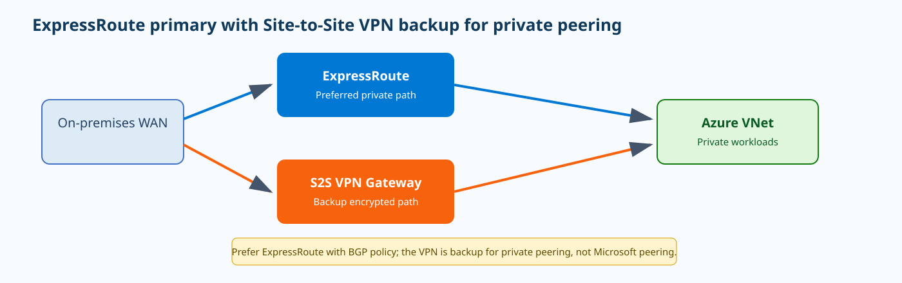
{kind=link}
Prerequisites and implementation
Create a GatewaySubnet large enough for both gateways; Microsoft recommends /27 or larger for coexistence designs. The example assumes the ExpressRoute gateway already exists and creates the VPN public IP, route-based VPN gateway, local network gateway, and connection. Use a production SKU compatible with your throughput and zone requirements rather than copying a lab SKU blindly. The local network gateway’s BGP settings should represent the on-premises VPN peer, while the on-premises routers apply route policy that keeps ExpressRoute preferred when both paths are healthy.
az network public-ip create -g <rg> -n vpn-backup-pip --sku Standard --allocation-method Static
az network vnet-gateway create -g <rg> -n vpn-backup-gw --public-ip-addresses vpn-backup-pip --vnet <hub-vnet> --gateway-type Vpn --vpn-type RouteBased --sku <vpn-gateway-sku> --asn <azure-vpn-asn>
az network local-gateway create -g <rg> -n onprem-vpn --gateway-ip-address <onprem-public-vpn-ip> --local-address-prefixes <onprem-prefixes>
az network vpn-connection create -g <rg> -n er-backup-vpn --vnet-gateway1 vpn-backup-gw --local-gateway2 onprem-vpn --shared-key "<strong-secret>" --enable-bgp truePreference and failover engineering
The backup path should be intentionally less preferred, not merely “present.” On premises, verify the route to an Azure workload prefix points to the ExpressRoute next hop and that the VPN-learned path is retained as an alternative. In Azure, identical route preference normally favors ExpressRoute. Test longest-prefix behavior by inspecting every advertisement: an accidental /24 on VPN can beat a /16 on ExpressRoute. Capacity planning is equally important. If normal ExpressRoute traffic is 3 Gbps but the VPN gateway can only sustain a fraction of that for your traffic mix, the routing failover will succeed while applications fail from congestion. Decide which critical prefixes must survive, whether noncritical traffic should be filtered during backup mode, and whether MSS adjustments are needed because the IPsec path has different encapsulation overhead.
Enterprise scenario
A manufacturer uses a 5-Gbps ExpressRoute circuit for ERP and engineering traffic and keeps a VPN Gateway solely for continuity during a carrier outage. Rather than pretending the VPN can carry the full normal workload, it defines a failover policy that preserves ERP, identity, DNS, and monitoring prefixes while deprioritizing bulk engineering replication. During a quarterly exercise the network team withdraws the ExpressRoute route, confirms the VPN path becomes best, measures application recovery, and records which long-lived TCP sessions reset. The exercise reveals that one engineering /24 was advertised more specifically through VPN and had been using the backup path during normal operation. Correcting that advertisement removes hidden Internet-path dependence before a real outage.
Verification
Steady-state verification requires three facts: ExpressRoute is learned and preferred, VPN is Connected and exchanging the backup routes, and a representative application uses the ExpressRoute path. Then perform an intentional circuit/path failure and observe route withdrawal, VPN takeover, application recovery, and throughput. Do not declare success simply because the VPN connection status was Connected before the test. The expected output below shows the conceptual state; exact BGP output depends on the CE platform.
az network vpn-connection show -g <rg> -n er-backup-vpn --query "{status:connectionStatus,ingress:ingressBytesTransferred,egress:egressBytesTransferred}" -o json
az network express-route show -g <rg> -n <circuit> --query "{provider:serviceProviderProvisioningState,circuit:circuitProvisioningState}" -o jsonExpressRoute: Provisioned / Enabled
VPN: Connected
CE BGP: 10.50.0.0/16 via ExpressRoute BEST; same /16 via IPsec valid backup
After ER failure: VPN path becomes BESTTroubleshooting
If traffic uses VPN while ExpressRoute is healthy, compare prefix length and BGP attributes rather than assuming Azure ignored its preference. If failover never occurs, confirm the VPN path is actually advertising/learning the same critical prefixes and that the on-premises firewall permits the IPsec traffic. If failover occurs but applications time out, check the VPN gateway throughput, MTU/MSS, return-path symmetry, and stateful firewall sessions. Expect some stateful connections to reset during path migration; design retry logic and runbooks accordingly. If the business requires seamless, high-throughput continuity with minimal session impact, a second diverse ExpressRoute circuit can be a more appropriate resiliency design than a VPN backup.
az network vpn-connection show -g <rg> -n er-backup-vpn -o jsonc
az network express-route show -g <rg> -n <circuit> -o jsonc
# CE: show bgp <azure-prefix>ExpressRoute: Enabled; VPN: Connected
10.50.0.0/16 via ExpressRoute
10.50.10.0/24 via VPN BESTScenario: ExpressRoute reference architecture
Substantive prose: 753 words
ExpressRoute Local: metro-scoped private connectivity and the SKU boundary
Why it matters
ExpressRoute Local is a cost and scope decision, not a “smaller Standard circuit.” A Local circuit at a supported peering location reaches only one or two Azure regions in or near that metropolitan area. Standard reaches regions within a geopolitical area, and Premium extends reach globally. Local includes data-transfer charges in the SKU pricing model, which can make it attractive when a large volume of private traffic stays close to a particular metro. The tradeoff is intentionally restricted route scope and the loss of Global Reach. An engineer choosing Local must therefore start from workload geography and future expansion plans rather than from bandwidth alone.
Architecture
The physical/provider connection terminates at an ExpressRoute peering location. The circuit SKU controls what Azure regional routes Microsoft advertises through private and Microsoft peering. With Local, only the corresponding local Azure region or regions are in scope. A VNet in an eligible nearby region can connect through an ExpressRoute gateway to the circuit. A VNet in a distant region should not be expected to appear simply because its subscription owns the same circuit. This is a control-plane boundary enforced by route advertisement scope. Global Reach, which links on-premises networks through Microsoft’s backbone, is not available on Local. Resource limits otherwise align with Standard, so the main architectural differences are reach and billing rather than an entirely different circuit object.
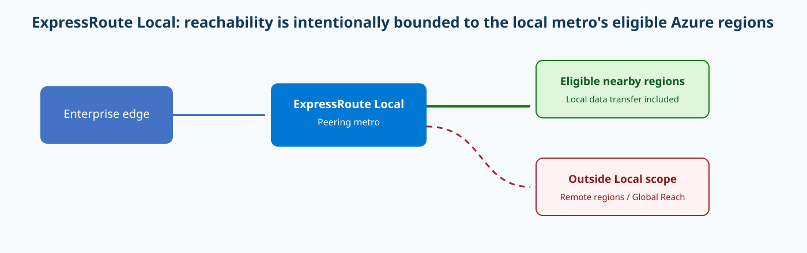
{kind=link}
Prerequisites and implementation
Before creation, verify the exact peering location and the Local-to-Azure-region mapping on Microsoft’s current locations page. A common mistake is confusing the Azure resource’s location field—which determines where the ARM metadata resides—with the ExpressRoute peering-location, which determines the physical connectivity site and Local reach. The CLI can create a Local circuit using the Local SKU tier and UnlimitedData family. Do not use MeteredData for Local; Microsoft documents Local as UnlimitedData only. Your provider must provision the service key before peering becomes usable.
az network express-route create --resource-group <rg> --name <local-circuit> --provider "<provider-name>" --peering-location "<supported-local-peering-location>" --bandwidth <mbps> --sku-tier Local --sku-family UnlimitedData --location <arm-resource-region>
az network express-route show -g <rg> -n <local-circuit> -o jsoncWhen Local is and is not a fit
Local fits a design such as a data-processing plant near an Azure region that sends terabytes of data to regional workloads and does not need remote Azure regions or Global Reach. It is a poor choice for a shared enterprise connectivity service expected to serve many regions, support cross-geography growth, or act as a WAN transit foundation. Migration also deserves planning. You can change some ExpressRoute SKU properties, but downgrade paths and billing-family transitions have constraints; do not assume a portal dropdown can convert every existing Standard/Premium design into Local. Validate the current CLI/PowerShell support and route scope before changing production. If future expansion is probable, quantify whether Local’s current transfer economics outweigh the operational cost of later replacing or adding circuits.
Enterprise scenario
A media-processing company colocates equipment in a facility near an Azure region and transfers large daily data sets to regional storage and compute. It chooses ExpressRoute Local because the workloads intentionally remain in the metro’s eligible regions and the included data-transfer model is favorable. The architecture review explicitly rejects Global Reach and remote-region dependencies. Six months later a project proposes a workload in another geography. Instead of troubleshooting a deliberately absent route, the network team treats this as a new connectivity requirement and compares adding a Standard/Premium circuit with moving the workload back into Local scope. That governance step prevents the Local circuit from becoming an accidental enterprise WAN foundation.
Verification
After the provider provisions the circuit, verify the service-provider and circuit provisioning states. Then check private peering and learned routes. The most important Local validation is negative as well as positive: the eligible local Azure routes should be present, while nonlocal regional routes should not appear simply because they belong to your tenant. Document the intended local-region list before testing so an operator knows whether a missing route is correct scope enforcement or an outage.
az network express-route show -g <rg> -n <local-circuit> --query "{tier:sku.tier,family:sku.family,provider:serviceProviderProvisioningState,circuit:circuitProvisioningState,location:peeringLocation}" -o json
az network express-route peering show -g <rg> --circuit-name <local-circuit> --name AzurePrivatePeering -o jsonc{"tier":"Local","family":"UnlimitedData","provider":"Provisioned","circuit":"Enabled","location":"Seattle"}
Eligible local Azure routes: present
Distant nonlocal Azure routes: absentTroubleshooting
If a remote-region VNet cannot be reached, first ask whether that region is inside the Local SKU scope. If it is outside, no amount of BGP tuning fixes the architectural mismatch; use Standard/Premium or another circuit. If a local-region route is unexpectedly absent, verify the VNet gateway connection, private peering state, provider provisioning, and circuit route advertisements. If someone attempts to enable Global Reach on a Local circuit, the failure is by design. If costs surprise the team after choosing Standard instead of Local, compare transfer billing and regional scope rather than focusing only on monthly port price. Troubleshooting Local is therefore partly about proving that the desired reach matches the SKU’s contract.
az network express-route show -g <rg> -n <local-circuit> -o jsonc
az network express-route peering show -g <rg> --circuit-name <local-circuit> --name AzurePrivatePeering -o jsonctier: Local; provider: Provisioned; private peering: Enabled
Requested destination: VNet outside the Local metro mappingBring Your Own IP: custom IP prefix validation, commissioning, and Azure public-address lifecycle
Why it matters
Bring Your Own IP lets an organization use public address space it owns with Azure public IP resources. The feature matters when allowlists, reputation, regulated partner integrations, or migration requirements make existing public prefixes valuable. The Azure object that proves and onboards ownership is the custom IP address prefix. It is not directly assigned to a NIC or load balancer. After validation and commissioning, you derive a normal Azure public IP prefix from it, then derive public IP addresses or attach the prefix to supported Azure services. The lifecycle is intentionally staged because Microsoft must verify authorization before originating the route from Microsoft ASN 8075.
Architecture
The control plane begins outside Azure with RIR ownership and authorization. You create an Azure custom IP prefix with the CIDR and Microsoft-provided validation material, then wait for Provisioned. Commissioning asks Microsoft to begin advertising the prefix. Only after the prefix reaches Commissioned should production services depend on Microsoft’s advertisement. A child public IP prefix is then created from the custom prefix, and Azure public IP resources consume addresses from that child. Unified IPv4 custom-prefix rules and zonal/global relationships impose size and placement constraints; Microsoft documents IPv4 ranges such as /21 through /24 for unified onboarding scenarios and regional quota defaults. BYOIP also has explicit limitations: it does not make the prefix eligible for ExpressRoute Microsoft-peering advertisement, and Azure does not automatically provide reverse DNS for customer-owned space.
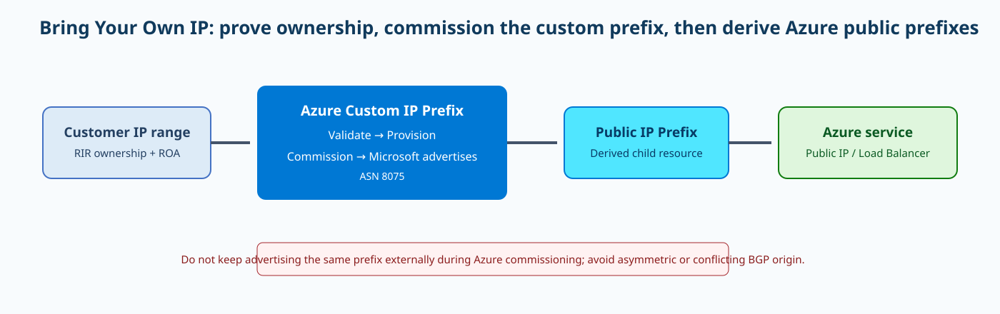
{kind=link}
Prerequisites and implementation
The CLI workflow should be treated like a change-management process. First obtain the authorization message and signed message required by Microsoft. Create the custom prefix in the correct region and zones, wait for Provisioned, then commission it. Provisioning can take tens of minutes and commissioning can take hours because BGP propagation is involved. Do not continue advertising the same prefix from another Internet origin while Microsoft is commissioning it unless the supported migration procedure explicitly calls for the overlap; competing origins can create inconsistent reachability. The exact authorization strings below are placeholders—you must use the material generated for your prefix.
az network custom-ip prefix create --resource-group <rg> --name <custom-prefix-name> --location <region> --cidr "<owned-public-cidr>" --zone 1 2 3 --authorization-message "$BYOIP_AUTH" --signed-message "$BYOIP_SIGNED"
az network custom-ip prefix show -g <rg> -n <custom-prefix-name> --query "{state:commissionedState,provisioning:provisioningState,cidr:cidr}" -o json
az network custom-ip prefix update -g <rg> -n <custom-prefix-name> --state commissionMigration and address-consumption design
Commissioning the parent is not the end of implementation. Create child public IP prefixes that match the service deployment strategy and then allocate public IPs from them. Keep blast radius in mind: one large child prefix assigned to a highly dynamic platform can consume addresses differently from several smaller prefixes with explicit ownership. Build DNS cutover and partner allowlist validation around the real public IPs Azure allocates, not merely around the parent custom prefix. During migration, use external looking glasses and multiple resolvers/HTTP probes to observe when Microsoft’s origin becomes globally visible. Also plan decommissioning: remove Azure dependencies before decommissioning the custom prefix, allow routing to converge, and only then return the route to the previous provider or origin.
Enterprise scenario
A financial firm moves a public API from a colocation provider to Azure but must preserve a /24 already present in hundreds of partner allowlists. It onboards the /24 as a custom IP prefix, waits for Provisioned, schedules commissioning, and monitors external BGP visibility before changing DNS. A single derived public IP prefix is reserved for the API tier while another portion remains unused for future services. During the change the old provider stops originating the route according to the migration plan. Only after several external probes see AS8075 and the Azure public IP responds correctly does the team lower DNS TTLs and move production. This separates routing convergence from application cutover and gives a clear rollback decision point.
Verification
The Azure resource has two relevant dimensions: ARM provisioning and the BYOIP commissioned state. provisioningState Succeeded tells you the object operation succeeded; commissionedState Commissioned tells you Microsoft has completed the route-onboarding state. External BGP observation should then show the prefix originated by Microsoft. Finally, attach a derived public IP to a test service and verify traffic from several networks before moving critical DNS names.
az network custom-ip prefix show -g <rg> -n <custom-prefix-name> --query "{cidr:cidr,provisioning:provisioningState,state:commissionedState}" -o json
az network public-ip show -g <rg> -n <public-ip-name> --query "{ip:ipAddress,prefix:publicIPPrefix.id,provisioning:provisioningState}" -o json{"cidr":"203.0.113.0/24","provisioning":"Succeeded","state":"Commissioned"}
Derived public IP: 203.0.113.10 / Succeeded
External route view: 203.0.113.0/24 origin AS8075Troubleshooting
If creation remains in validation or fails, inspect the RIR/authorization material before changing Azure networking. A mismatch between the registered owner, signed authorization, CIDR, or expected region/zone model prevents onboarding. If the prefix is Provisioned but not Commissioned, Microsoft is not yet advertising it; do not cut production DNS prematurely. If Commissioned but some networks cannot reach the address, compare BGP visibility from multiple vantage points and make sure you are not still originating the same prefix elsewhere in a conflicting way. If a public IP cannot be created from the custom prefix, check that you created the necessary derived public IP prefix and that its region/zone and resource type are supported. Troubleshooting BYOIP is fundamentally lifecycle-aware: know which stage should be providing routing at each moment.
az network custom-ip prefix show -g <rg> -n <custom-prefix-name> -o jsonc
az network public-ip prefix list -g <rg> -o table
az network public-ip list -g <rg> -o tableprovisioningState: Succeeded
commissionedState: Provisioned
External BGP: prefix not originated by AS8075Subnet delegation: service-specific control of a subnet without giving away the VNet
Why it matters
Subnet delegation lets a specific Azure service receive the network permissions it needs to deploy or manage service resources in a subnet. It is neither a generic service endpoint nor a blanket transfer of VNet ownership. The delegation identifies a service type such as Microsoft.Web/serverFarms, and Azure enforces the actions that service is allowed to perform against that subnet. This is useful for delegated PaaS designs because it gives the platform enough control to operate the service while retaining the VNet, route tables, NSGs, and broader address plan under the customer’s subscription governance.
Architecture
The VNet remains the customer network boundary. Inside it, a subnet object contains a delegations collection. Each delegation has a service name and an allowed-action contract defined by the service. When a delegated service deploys, Azure validates that the subnet has the required delegation and that incompatible resources or policies are not blocking the service’s network intent. Delegation can also change what other resource types may coexist in the subnet, which is why dedicated subnets are common even when not technically mandatory. The control plane is therefore an ARM permission contract between Microsoft.Network and the delegated resource provider. The data plane is still normal VNet forwarding; delegation does not itself create a route, NAT rule, DNS entry, or NSG allow rule.
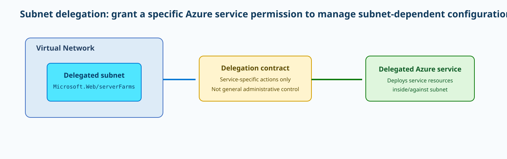
{kind=link}
Prerequisites and implementation
Choose the service first, then size the subnet for that service’s scale and upgrade behavior. Some managed services reserve addresses or require headroom during maintenance, so an overly small delegated subnet can become an operational limit later. The Azure CLI can add a delegation to an existing empty/compatible subnet. The service identifier must be exact. The example uses App Service VNet integration’s common delegation identifier; for another PaaS service, use the identifier documented by that service. Removing or changing delegation while dependent resources still exist is normally blocked or unsafe.
az network vnet subnet update --resource-group <rg> --vnet-name <vnet> --name <subnet> --delegations Microsoft.Web/serverFarms
az network vnet subnet show -g <rg> --vnet-name <vnet> -n <subnet> --query "{prefix:addressPrefix,delegations:delegations[].serviceName}" -o jsonChange control and adjacent subnet settings
Delegation is often deployed alongside NSGs, route tables, service endpoints, or private-endpoint network-policy settings, but those are separate controls. Do not assume the delegated service ignores your NSG or UDR; read the service’s network-integration requirements because a forced default route or restrictive NSG can affect management traffic. When repurposing a subnet, remove the existing service resources first, then remove or change the delegation. Microsoft’s troubleshooting guidance explicitly shows using az network vnet subnet update --remove delegations only after dependent resources are gone. This dependency ordering is important in automation: Terraform or Bicep destroy graphs should delete the PaaS attachment before trying to repurpose the subnet.
Enterprise scenario
A platform team has separate delegated subnets for App Service integration and PostgreSQL Flexible Server. A developer tries to place a new App Service integration into the database subnet because it has unused IP addresses. The deployment correctly fails because the subnet is delegated to a different service. Instead of removing delegation to “make it work,” the team uses the existing App Service integration subnet and expands its prefix before scale becomes a problem. Later, when retiring the database service, automation first deletes the database resources, waits for subnet attachments to disappear, removes the old delegation, and only then repurposes the subnet. The sequence prevents orphaned service-owned networking state and documents why free IP space alone does not imply subnet compatibility.
Verification
The direct success signal is the subnet’s delegations serviceName. Then verify that the delegated service itself can bind to the subnet and reaches its healthy state. A delegation that appears correctly in ARM but a service deployment that fails with “subnet is in use” or “delegation required” means either the wrong service identifier, an incompatible resource in the subnet, or a service-specific network requirement is unmet. Record both the subnet state and service state.
az network vnet subnet show -g <rg> --vnet-name <vnet> -n <subnet> --query "{prefix:addressPrefix,delegationNames:delegations[].name,services:delegations[].serviceName,provisioning:provisioningState}" -o json{"prefix":"10.40.10.0/24","services":["Microsoft.Web/serverFarms"],"provisioning":"Succeeded"}
Delegated service: VNet integration ConnectedTroubleshooting
If a new service refuses the subnet, first inspect the existing delegation and IP usage instead of deleting network policy. A subnet may already be delegated to a different service or contain resources that the new service cannot share with. If you need to change delegation, delete the old delegated-service resources, verify the subnet no longer has service-owned interfaces or attachments, remove delegation, and then add the new one. If a deployment succeeds but application traffic fails, delegation is no longer the primary suspect; inspect effective routes, NSGs, DNS, and the specific PaaS integration. The important distinction is control plane versus forwarding: delegation authorizes service management of the subnet, but it does not guarantee that a workload path is open.
az network vnet subnet show -g <rg> --vnet-name <vnet> -n <subnet> -o jsonc
# After dependent resources are removed:
az network vnet subnet update -g <rg> --vnet-name <vnet> -n <subnet> --remove delegationsdelegation: Microsoft.DBforPostgreSQL/flexibleServers
Requested: App Service VNet integration
Error: subnet delegated to incompatible serviceScenario: Manage virtual network subnets
Substantive prose: 726 words
Standard Load Balancer outbound rules: explicit SNAT, port allocation, and exhaustion
Why it matters
Outbound rules make Azure Standard Load Balancer egress predictable by explicitly binding a backend pool to one or more frontend public IP configurations and allocating SNAT ports. This matters because outbound connectivity is a finite translation resource. A VM can have healthy CPU, a healthy load-balancer probe, and plenty of bandwidth yet fail new Internet connections because its assigned SNAT ports are exhausted. Microsoft’s recent guidance discourages relying on default port allocation for production. Explicit outbound rules—or Azure NAT Gateway when that better fits the architecture—let you size the egress identity and port capacity instead of discovering a hidden limit during a connection burst.
Architecture
A backend VM initiates a TCP or UDP connection from its private IP and ephemeral source port. Standard Load Balancer translates the source to a frontend public IP and assigns a SNAT port from the allocation associated with that backend. Return traffic maps back through that translation state. Each frontend IPv4 address provides a finite port inventory, and the allocation strategy determines how many ports each backend can consume. Outbound rules can control protocol, allocated outbound ports, idle timeout, TCP reset behavior, and which frontend IPs participate. They do not provide ICMP SNAT. If the same frontend is also used by an inbound load-balancing rule, disable that rule’s automatic outbound SNAT when you want the explicit outbound rule to own port allocation.
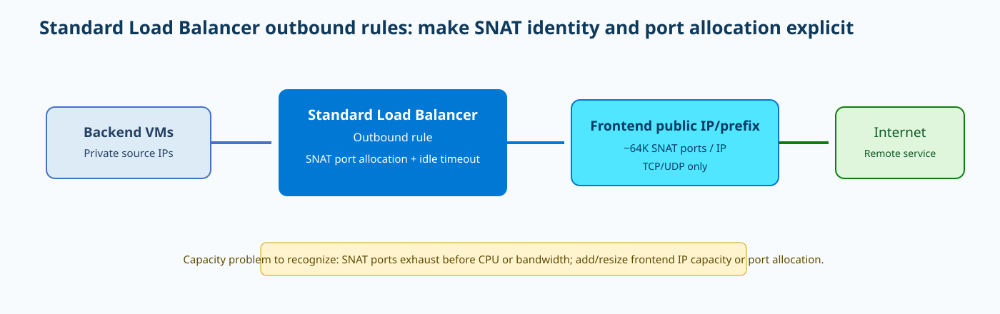
{kind=link}
Prerequisites and implementation
Start with a Standard Load Balancer, a frontend public IP, and a backend pool containing the VMs or VM Scale Set instances that need egress. Then create an outbound rule and choose a port allocation based on concurrency, backend count, and frontend IP count. The CLI uses --allocated-outbound-ports, also surfaced as --outbound-ports in current command aliases. Do not set a random large number without checking that the frontend IP inventory can support the aggregate allocation. The example allocates 2048 ports per backend and enables TCP reset on idle timeout.
az network lb outbound-rule create --resource-group <rg> --lb-name <standard-lb> --name outbound-internet --protocol All --backend-address-pool <backend-pool> --frontend-ip-configs <frontend-config> --allocated-outbound-ports 2048 --idle-timeout 15 --enable-tcp-reset true
az network lb outbound-rule show -g <rg> --lb-name <standard-lb> -n outbound-internet -o jsoncCapacity model and choosing NAT Gateway instead
Default port allocation can give relatively few ports per backend as pool size grows, which is why Microsoft recommends explicit sizing or NAT Gateway for production workloads with large outbound fan-out. Estimate concurrent destinations, connection churn, keepalive behavior, and backend scale-out. A single frontend IP has about 64K available TCP/UDP SNAT ports, but not every theoretical port should be treated as usable capacity without considering Azure’s allocation rules. Adding frontend IPs or a prefix expands the available pool. NAT Gateway can be simpler when deterministic high-scale outbound is the primary requirement and inbound load balancing is not coupled to egress. In new VNets, explicit outbound is increasingly important because default Internet outbound access is no longer something you should rely on as an architecture.
Enterprise scenario
A web-crawling platform runs 80 VM instances behind a Standard Load Balancer and opens thousands of short-lived outbound TCP connections. The initial design relies on default SNAT behavior and fails unpredictably during a campaign. Metrics and connection tests show that existing sessions survive while new connections time out. The team replaces implicit egress with an explicit outbound rule, calculates per-instance concurrency, adds frontend IP capacity, and assigns ports deliberately. A repeat load test shows stable new-connection success. The incident becomes a useful design lesson: health probes prove backend eligibility for load balancing, but they say nothing about outbound translation capacity. The egress resource must be sized independently from CPU, memory, and inbound throughput.
Verification
Verify the outbound rule properties and then test from more than one backend. The public source seen by an external echo service should match a configured frontend IP. Under a controlled connection-load test, successful connection rate should remain stable and SNAT-related platform metrics should not show exhaustion. The representative configuration below proves the rule is enabled; external source-IP confirmation proves the data plane is using it.
az network lb outbound-rule show -g <rg> --lb-name <standard-lb> -n outbound-internet --query "{protocol:protocol,ports:allocatedOutboundPorts,idle:idleTimeoutInMinutes,tcpReset:enableTcpReset,provisioning:provisioningState}" -o json
curl https://api.ipify.org{"protocol":"All","ports":2048,"idle":15,"tcpReset":true,"provisioning":"Succeeded"}
backend curl: 198.51.100.20 (matches LB frontend public IP)Troubleshooting
A classic exhaustion symptom is that existing connections continue working while new outbound connections intermittently time out, especially during high fan-out to many destinations. Check whether the pool scaled beyond the assumptions used for port allocation, whether one frontend IP is carrying too many backends, and whether idle connections hold ports longer than expected. If an inbound rule still has automatic outbound SNAT enabled on the same frontend, make the intended ownership explicit. If only ICMP fails, remember outbound rules do not make ICMP behave like TCP/UDP SNAT. Corrective actions include increasing explicit ports when capacity permits, adding frontend IPs/prefix capacity, reducing connection churn, or moving egress to NAT Gateway.
az network lb outbound-rule show -g <rg> --lb-name <standard-lb> -n outbound-internet -o jsonc
az network lb frontend-ip list -g <rg> --lb-name <standard-lb> -o table
az network lb address-pool show -g <rg> --lb-name <standard-lb> -n <backend-pool> -o jsoncallocatedOutboundPorts: 1024
backend instances: 100
frontend IPs: 1
existing sessions healthy; new high-concurrency sessions timeoutApplication Gateway v2 rewrites: headers, URL changes, conditions, and route reevaluation
Why it matters
Application Gateway v2 rewrite rules solve problems that otherwise force an application change or an extra proxy tier. They can add, remove, or replace request and response headers, and they can rewrite host, path, or query-string components. A common migration use case is a backend that issues redirects to its platform hostname while clients must continue seeing the enterprise hostname. Another is inserting security headers or removing information-leaking response headers. Rewrites are powerful because they operate inside the HTTP processing path, but that also means a badly scoped rule can affect every request on a listener or change which backend a path-based rule selects.
Architecture
A rewrite set is associated with a request routing rule or path-map element. Optional conditions evaluate request headers, response headers, or supported server variables. If all configured conditions match, the action set modifies headers and/or URL components. In a basic routing rule, the rewrite behaves globally for the listener. With path-based routing, attach the rewrite where it is needed in the URL path map. URL rewrites have an especially important switch: reevaluate the path map after the rewrite. If enabled, the rewritten path can select a different backend pool. If disabled, backend selection remains based on the original path even though the request forwarded to the backend contains the rewritten value.
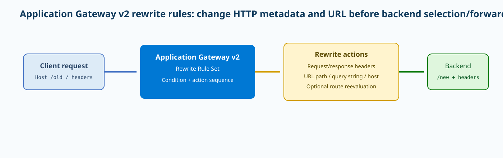
{kind=link}
Prerequisites and implementation
The current Microsoft how-to uses Azure PowerShell to create a response-header rewrite that changes azurewebsites.net redirects to contoso.com. The cmdlets build the header action, condition, rule, rule set, and then associate the set with an existing routing rule before committing the Application Gateway object. This is a safer example than inventing an undocumented CLI shape. Replace the gateway, resource group, rule names, hostname, and regex with your real application values. Test regex capture groups carefully before applying them to production redirects.
$responseHeaderConfiguration=New-AzApplicationGatewayRewriteRuleHeaderConfiguration -HeaderName "Location" -HeaderValue "{http_resp_Location_1}://contoso.com{http_resp_Location_2}"
$actionSet=New-AzApplicationGatewayRewriteRuleActionSet -ResponseHeaderConfiguration $responseHeaderConfiguration
$condition=New-AzApplicationGatewayRewriteRuleCondition -Variable "http_resp_Location" -Pattern "(https?):\/\/.*azurewebsites\.net(.*)$" -IgnoreCase
$rewriteRule=New-AzApplicationGatewayRewriteRule -Name LocationHeader -ActionSet $actionSet -Condition $condition
$rewriteRuleSet=New-AzApplicationGatewayRewriteRuleSet -Name LocationHeaderRewrite -RewriteRule $rewriteRule
$appgw=Get-AzApplicationGateway -Name "<appgw>" -ResourceGroupName "<rg>"
$reqRule=Get-AzApplicationGatewayRequestRoutingRule -Name "<rule>" -ApplicationGateway $appgw
Add-AzApplicationGatewayRewriteRuleSet -ApplicationGateway $appgw -Name $rewriteRuleSet.Name -RewriteRule $rewriteRuleSet.RewriteRules
Set-AzApplicationGatewayRequestRoutingRule -ApplicationGateway $appgw -Name $reqRule.Name -RuleType $reqRule.RuleType -BackendHttpSettingsId $reqRule.BackendHttpSettings.Id -HttpListenerId $reqRule.HttpListener.Id -BackendAddressPoolId $reqRule.BackendAddressPool.Id -RewriteRuleSetId $rewriteRuleSet.Id
Set-AzApplicationGateway -ApplicationGateway $appgwConditions and routing consequences
Conditions are logical AND when multiple conditions belong to the same rule, so a rewrite may silently not execute when one regex does not match. Use captured request or response values only after validating the capture pattern. Remember the few headers that cannot be rewritten, such as Connection and Upgrade. Security-header injection is useful, but only when the application’s semantics are understood; blindly setting HSTS on a domain that still serves required HTTP endpoints can cause client-side breakage. URL rewriting can be even more consequential. If /old/(.*) is rewritten to /new/$1 and path-map reevaluation is enabled, verify the rewritten path maps to the expected backend instead of falling into a default pool.
Enterprise scenario
A SaaS migration places Application Gateway in front of an App Service backend. The application still generates Location redirects containing its azurewebsites.net hostname, which leaks implementation detail and breaks a vanity-domain login flow. The network team creates a conditional response-header rewrite that changes only matching Location values and leaves unrelated responses untouched. In a second phase it rewrites /legacy/* to /v2/* and enables path-map reevaluation so the rewritten path selects the new backend pool. Testing deliberately includes redirects with query strings and uppercase host variations. That catches a regex assumption before production and demonstrates why rewrite verification must examine both the transformed request/response and the selected backend.
Verification
Verification should compare the client-visible response with the backend’s original behavior and inspect the committed gateway rewrite configuration. For a Location-header example, query the backend directly to show it returns https://app.azurewebsites.net, then query through Application Gateway and confirm clients receive https://contoso.com. The rewrite set should appear attached to the intended request-routing rule. If the gateway returns the correct status but the header is unchanged, the condition or rule association is the likely layer.
$appgw=Get-AzApplicationGateway -Name "<appgw>" -ResourceGroupName "<rg>"
$appgw.RewriteRuleSets | Format-List
curl -I https://<appgw-public-host>/<test-path>RewriteRuleSet: LocationHeaderRewrite
Condition: http_resp_Location matches azurewebsites.net
HTTP/1.1 302 Found
Location: https://contoso.com/loginTroubleshooting
When a rewrite is missing, first prove whether the rule is attached to the routing rule that handled the request. Next test the condition against the real header value; regex differences in scheme, capitalization, port, or path commonly prevent a match. If the header rewrites correctly but traffic reaches the wrong backend, inspect whether path-map reevaluation is enabled for a URL rewrite and compare the original and rewritten path maps. If the backend breaks because a required header disappeared, revert the action rather than changing health probes. Application Gateway logs can help correlate the selected listener/rule/backend, but a simple before-and-after HTTP trace is often the fastest proof of rewrite behavior.
$appgw=Get-AzApplicationGateway -Name "<appgw>" -ResourceGroupName "<rg>"
$appgw.RequestRoutingRules | Select Name,RewriteRuleSet
$appgw.RewriteRuleSets | Format-List
curl -vkI https://<appgw-host>/<test-path>Backend direct Location: https://app.azurewebsites.net/login
Through App Gateway: same Location
Rewrite set exists but is not associated with serving routing ruleAzure Front Door caching: cache-control, query strings, edge evidence, and privacy boundaries
Why it matters
Front Door caching reduces latency and origin load by serving cacheable GET responses from Microsoft edge points rather than fetching every object from the origin. The benefit is straightforward for static images, JavaScript, CSS, software packages, and other content whose bytes are safe to share across users. The risk is equally important: caching authenticated or user-specific responses can expose one user’s content to another if cache keys and headers are wrong. Microsoft explicitly recommends separating static and dynamic routes and leaving caching disabled for dynamic authenticated endpoints unless the application is designed for shared caching.
Architecture
A client sends a GET to the Front Door endpoint. The route’s caching configuration and any Rules Engine overrides determine whether the request is eligible and how query strings affect the cache key. Front Door checks the nearest appropriate edge cache. A hit returns content without visiting the origin. A miss fetches the object, applies cache semantics, and may store it for subsequent requests. Origin Cache-Control directives are significant: s-maxage takes precedence for shared caches, followed by max-age, then Expires behavior. Microsoft caps cached duration and also documents default caching behavior when caching is enabled but the origin provides no cache directive. Large files are chunked in 8-MB pieces, which explains why the X-Cache value can describe the first chunk rather than an entire huge object in the way an operator might intuitively expect.
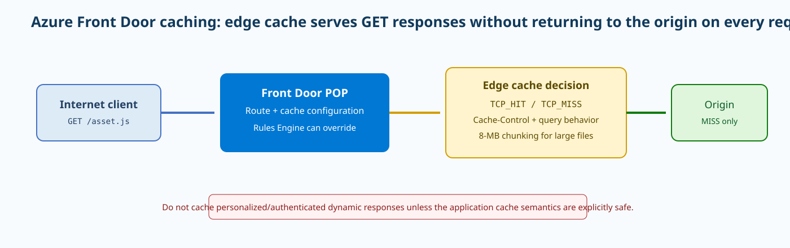
{kind=link}
Prerequisites and implementation
Caching is configured on a Front Door Standard/Premium route. Microsoft’s current dedicated how-to uses the portal for the cache toggle and query-string behavior. The Azure CLI does create/update Front Door routes, but cache-configuration parameters can vary with CLI extension/API version, so do not invent flags. Use the current az afd route --help or ARM/Bicep schema in your environment for automation. The implementation pattern is to keep a static-content route such as /assets/* with caching enabled and an API route such as /api/* with caching disabled. The following CLI safely shows the route object you will change and the current supported update surface before you apply the documented cache configuration.
az afd route show --resource-group <rg> --profile-name <afd-profile> --endpoint-name <endpoint> --route-name <static-route> -o jsonc
az afd route update --help
# Apply cache configuration with the current supported route API/CLI/ARM schema.
# Enable caching only on the static route; select query-string behavior deliberately.Cache keys and origin semantics
Query-string behavior determines whether ?version=1 and ?version=2 map to the same or different cache entries. Ignoring a query string that actually changes response content can serve the wrong object; including irrelevant tracking parameters can destroy cache efficiency by creating thousands of equivalent entries. Origin developers should set explicit Cache-Control headers because they make desired lifetime visible at the application boundary. private and no-store should keep sensitive responses out of shared cache. When a Rules Engine rule changes cache behavior, remember it can override route-level settings; troubleshoot the evaluated rule set, not only the route checkbox.
Enterprise scenario
A software company serves versioned JavaScript bundles and authenticated API responses through the same Front Door profile. It creates a dedicated /assets/* route with caching and long explicit cache-control while /api/* remains uncached. Query-string behavior includes the version parameter but ignores marketing tracking parameters so identical binaries share a cache entry. During a release the team performs two requests from multiple regions and checks X-Cache plus origin logs. Static assets move from MISS to HIT and origin load drops. The API responses consistently return a noncacheable status. This design improves performance without treating cache hit ratio as the only goal; privacy and correctness remain more important than maximizing edge reuse.
Verification
Use repeated GETs for a known static object and inspect X-Cache, Age/cache headers, response bytes, and origin logs. The first request should commonly be a miss; subsequent requests from the same/nearby edge should become TCP_HIT or TCP_REMOTE_HIT while the origin stops receiving every request. PRIVATE_NOSTORE means the response’s cache-control semantics prevented storage; CONFIG_NOCACHE means Front Door was configured not to cache it. This header is one of the most useful operational signals because it tells you why the request did or did not use edge cache.
curl -sSI https://<front-door-host>/assets/app.js | egrep -i 'x-cache|cache-control|age|content-length'First: X-Cache: TCP_MISS
Second: X-Cache: TCP_HIT
Cache-Control: public, max-age=3600
Origin log: one fetch, not one per client requestTroubleshooting
If every request is a miss, inspect cache enablement, Rules Engine overrides, response Cache-Control, query-string variation, and whether the method is GET. If you see PRIVATE_NOSTORE, fix application cache headers only if sharing that response is actually safe. If users receive stale or cross-user content, treat it as a security incident: disable caching on the affected route, purge the cache, and repair cache-key/response-header behavior before re-enabling. If large file performance seems inconsistent, remember Front Door retrieves and caches in 8-MB chunks, so range behavior and first-chunk cache state can affect what X-Cache reports. Do not “improve hit rate” by caching an authenticated endpoint whose data is user specific.
curl -sSI "https://<front-door-host>/<path>?<query>" | egrep -i 'x-cache|cache-control|age|vary|set-cookie'
az afd route show -g <rg> --profile-name <afd-profile> --endpoint-name <endpoint> --route-name <route> -o jsoncX-Cache: PRIVATE_NOSTORE
Cache-Control: private, no-store
Set-Cookie: session=...Azure Bastion native client: tunneling, NSG hardening, and private VM management
Why it matters
Azure Bastion native-client support lets administrators use familiar SSH or RDP tooling while the target VM remains private. The operator authenticates to Azure, Bastion establishes the managed access path, and the VM does not need a public IP or a broad Internet-facing management NSG rule. This is particularly useful for engineers who need native SSH features, RDP clients, or local port tunneling without exposing every server. The security value comes from combining Bastion’s managed ingress with tight NSGs on AzureBastionSubnet and the target subnet rather than treating Bastion as permission to leave management ports open everywhere.
Architecture
The control plane uses Azure Resource Manager and the Bastion service. Native-client support requires Standard or Premium and tunneling enabled. The local Azure CLI invokes the Bastion extension, authorizes the target resource, and either launches SSH/RDP behavior or creates a local tunnel. The data plane enters Bastion over its service path and then reaches the target VM privately on the requested management port. The AzureBastionSubnet NSG has specific required flows: inbound 443 from Internet, GatewayManager 443, VNet traffic on 8080/5701, AzureLoadBalancer; outbound to target VNets on SSH/RDP ports, AzureCloud management, VNet 8080/5701, and Internet 80 where documented. The target subnet should allow 22/3389 from AzureBastionSubnet instead of from the entire Internet.
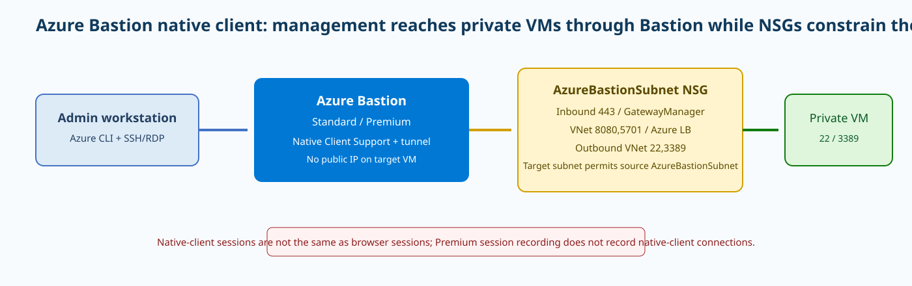
{kind=link}
Prerequisites and implementation
Enable tunneling on an existing Standard/Premium Bastion host and install the local CLI extensions. Do not run native-client commands in Cloud Shell; Microsoft explicitly documents that limitation. The example opens a local TCP port to a Linux VM’s SSH port. The --target-resource-id is the VM resource ID, not its private IP. For a direct az network bastion ssh workflow, select the appropriate authentication type. Microsoft Entra authentication requires the corresponding VM login extension and RBAC rights; otherwise the tunnel can be healthy while in-guest authentication still fails.
az extension add --name bastion
az extension add --name ssh
az network bastion update --resource-group <rg> --name <bastion-name> --enable-tunneling true
az network bastion tunnel --resource-group <rg> --name <bastion-name> --target-resource-id <vm-resource-id> --resource-port 22 --port 50022
ssh -p 50022 <user>@127.0.0.1NSG model and native-client limitations
Bastion’s subnet NSG must permit the service flows Microsoft documents; over-hardening it can break Bastion before the connection reaches the VM. Conversely, the workload subnet should not re-open SSH or RDP to the Internet just because an administrator needs access. Allow the AzureBastionSubnet address range as the source for management ports. Native-client capabilities differ by OS and method. The tunnel command can support file-transfer scenarios because you choose a local client, while direct SSH/RDP commands have their own feature matrix. Premium session recording does not record native-client connections, so if recording is a compliance requirement, choose a supported Bastion connection mode that provides it rather than assuming every Bastion session is captured. Bastion native-client sessions also have feature limitations that should influence the access standard. Cloud Shell is not supported for native-client connections, and an SSH private key stored in Key Vault cannot be consumed directly by this feature; download the key to the local workstation through the organization’s approved secret-handling process. Those constraints are implementation requirements, not reasons to expose a VM publicly.
Enterprise scenario
A security team removes public IP addresses from administrative VMs and standardizes Bastion Standard with native-client tunneling. AzureBastionSubnet has only the documented service flows and each workload subnet permits SSH or RDP from the Bastion subnet, not the Internet. Engineers use local SSH tools through az network bastion tunnel, while highly audited production systems use a connection method compatible with the organization’s recording requirement instead of assuming native sessions are recorded. During testing, one VM returns Permission denied after the tunnel connects. The team fixes the VM’s Entra/SSH authentication rather than opening port 22 more broadly, preserving the security boundary while resolving the real layer of failure.
Verification
Verify Bastion’s SKU and tunneling setting, then test a tunnel to a private VM that has no public IP. A successful local ssh -p 50022 127.0.0.1 proves Bastion reached the VM and the VM accepted the management connection. Also inspect effective NSG rules on the target NIC/subnet to make sure 22/3389 is not broadly exposed. The desired end state is both usable access and a narrow source scope.
az network bastion show -g <rg> -n <bastion-name> --query "{sku:sku.name,tunneling:enableTunneling,provisioning:provisioningState}" -o json
az network nic show-effective-nsg -g <rg> -n <target-nic> -o jsonc{"sku":"Standard","tunneling":true,"provisioning":"Succeeded"}
Target NSG: Allow SSH 22 from AzureBastionSubnet; Internet->22 Deny
ssh via 127.0.0.1:50022 successfulTroubleshooting
If the CLI reports that Native Client must be enabled, update the Bastion host rather than changing the VM. If the tunnel establishes but SSH returns Permission denied, networking is largely proven; investigate the selected authentication type, username, SSH key, Entra login extension, and VM RBAC. If Bastion cannot connect to any target, compare the AzureBastionSubnet NSG to Microsoft’s required service-tag/port matrix. If one VM alone fails, inspect its target subnet/NIC NSG and guest firewall. A useful diagnostic split is “Bastion service unavailable,” “Bastion cannot reach VM,” and “VM reachable but user authentication fails.” Each has different evidence and should not trigger the same remediation.
az network bastion show -g <rg> -n <bastion-name> -o jsonc
az network nic show-effective-nsg -g <rg> -n <target-nic> -o jsonc
az network bastion tunnel -g <rg> -n <bastion-name> --target-resource-id <vm-id> --resource-port 22 --port 50022
ssh -vvv -p 50022 <user>@127.0.0.1Bastion: Standard / tunneling true
Tunnel: connected
SSH: Permission denied (publickey)Virtual Network Manager security admin rules: central guardrails before workload NSGs
Why it matters
Security admin rules in Azure Virtual Network Manager let a central network or security team enforce traffic guardrails across many VNets before individual workload NSGs are evaluated. This addresses a governance problem that NSGs alone do not solve well: application teams can own local NSGs, while the enterprise still needs non-negotiable rules such as “deny inbound SSH from the Internet everywhere” or “always allow approved infrastructure scanners.” The design scales through network groups and regional security-admin configuration deployment rather than copying hundreds of identical NSG rules into every subnet.
Architecture
A Virtual Network Manager instance has a scope and network groups. A security admin configuration contains rule collections; each collection is associated with target network groups and contains rules with priority, direction, protocol, source/destination, ports, and one of three actions: Allow, AlwaysAllow, or Deny. Security admin rules are evaluated before NSGs. A normal Allow means the flow can proceed to NSG evaluation, where the workload may still deny it. Deny stops the flow centrally. AlwaysAllow allows the matching flow without subsequent NSG denial, which is powerful and should be used sparingly because application teams cannot override it locally. Microsoft permits only one security admin configuration deployed to a region from a given effective hierarchy and documents exceptions for some network-intent-policy services and private-endpoint behavior.
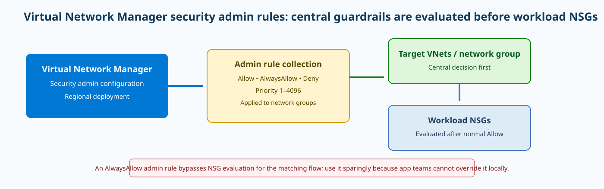
{kind=link}
Prerequisites and implementation
Build network groups first so rule scope follows business intent instead of raw CIDR lists. Then create a security admin configuration, a rule collection bound to the network group, and rules. Current Azure CLI commands live under az network manager security-admin-config. The example shows the collection creation shape; use the current rule subcommand to add a deny for inbound TCP/22 from Internet and an explicit management allow/AlwaysAllow only when policy justifies it. Finally deploy the configuration to the target region; creating it without deployment does not enforce it.
az network manager security-admin-config rule-collection create --resource-group <rg> --network-manager-name <network-manager> --configuration-name <security-config> --rule-collection-name baseline-guardrails --description "Central network security guardrails" --applies-to-groups network-group-id=<network-group-resource-id>
az network manager security-admin-config rule-collection rule create --help
# Add rules with priority, access {Allow|AlwaysAllow|Deny}, direction, protocol, sources/destinations and ports; then deploy the configuration to the region.Precedence and operating model
Priority values run from 1 through 4096, with lower numbers evaluated first. Central teams should reserve ranges for enterprise policy and document why AlwaysAllow exists. A better default is often a central Deny or normal Allow, leaving workload NSGs to implement application-specific least privilege. Rollout is eventually consistent, so do not assume every VNet changes at the exact same second after deployment. Pilot new deny rules against a network group representing nonproduction VNets, inspect flow logs and application health, and then expand scope. Also review current nonapplication exceptions before claiming the rule protects every Azure managed-service subnet; some network-intent-policy services can cause rules to be skipped or restricted.
Enterprise scenario
A central security organization manages dozens of application subscriptions. It creates an AVNM network group for production VNets and deploys a security admin Deny for inbound SSH from Internet at priority 100. Application teams remain free to manage their NSGs for east-west and service-specific traffic. A separate management-scanner rule uses normal Allow rather than AlwaysAllow so each application can still deny scanning where justified. In a pilot, an application NSG allows Internet SSH but the central Deny still blocks it, proving precedence. Another VNet remains unaffected because it was accidentally excluded from the network group; the fix is membership/deployment scope, not an NSG edit. This demonstrates the governance model the feature is designed to provide.
Verification
Verify three things: the rule exists with the intended priority/action, the collection points to the correct network group, and the configuration is deployed in the region containing the target VNet. Then test a flow. A central Deny for inbound TCP/22 should block the flow even if the target NSG would otherwise allow it. A normal central Allow should still be subject to the NSG. This distinction is the best way to prove that the team understands rule semantics rather than merely seeing a configuration object.
az network manager security-admin-config show -g <rg> --network-manager-name <network-manager> -n <security-config> -o jsonc
az network manager security-admin-config rule-collection list -g <rg> --network-manager-name <network-manager> --configuration-name <security-config> -o tableSecurity config: Succeeded; deployed eastus
Rule collection: baseline-guardrails -> production-vnets
priority 100 / Inbound / TCP 22 / Deny
Internet -> VM:22 blocked before NSG evaluationTroubleshooting
If the central rule exists but traffic is unchanged, first verify regional deployment and network-group membership. A configuration object that was never deployed is inert. If only some VNets are affected, inspect dynamic group membership and eventual-consistency timing. If a workload NSG appears unable to block a centrally allowed flow, check whether the admin action is AlwaysAllow; if so, that behavior is expected and the central rule must be changed. If a deny seems not to apply to a managed-service VNet, review Microsoft’s documented nonapplication/network-intent-policy exceptions before assuming a platform defect. Finally, remember private endpoints have special handling in current documentation; do not generalize VM behavior to every private endpoint.
az network manager security-admin-config show -g <rg> --network-manager-name <network-manager> -n <security-config> -o jsonc
az network manager group show -g <rg> --network-manager-name <network-manager> -n <network-group> -o jsoncRule: Deny / priority 100 / provisioning Succeeded
Target VNet: not a member of collection network group or config not deployed to its regionAzure Firewall explicit proxy: client-directed HTTP/S egress, PAC files, and policy enforcement
Why it matters
Azure Firewall normally operates transparently: a route table sends traffic through the firewall and applications do not know they are using a proxy. Explicit proxy adds a different model for outbound HTTP and HTTPS. The client or browser is configured to send proxy requests directly to the firewall’s private IP and listening port, optionally using a PAC file. This can simplify certain web-proxy migrations or controlled egress environments because HTTP/S does not depend on a 0.0.0.0/0 UDR to reach the firewall. It does not turn the firewall into an unrestricted relay. Azure Firewall application rules still determine whether the requested destination is allowed.
Architecture
The client receives static proxy settings or a PAC file. For a web request, it opens a connection to the Azure Firewall explicit-proxy listener instead of opening a direct connection to the destination. The firewall parses the HTTP request or HTTPS CONNECT flow, evaluates application rules, and opens the allowed outbound connection. Microsoft allows a single HTTP listener port to serve HTTP and HTTPS explicit-proxy traffic. If PAC is enabled, the firewall policy references a PAC URL in Azure Storage; a managed identity can be granted the required blob access so the firewall can retrieve the file. This creates a separate control dependency: client-to-firewall proxy reachability, firewall-to-PAC storage access, and firewall-to-destination data traffic can fail independently.
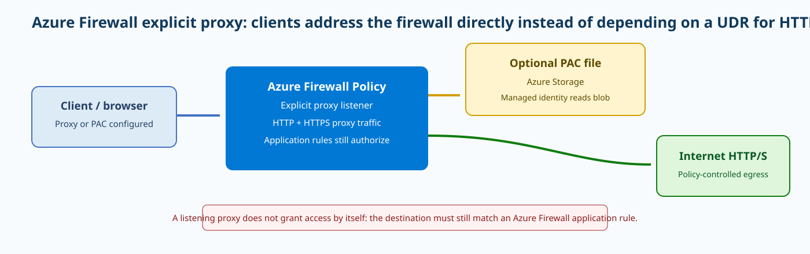
{kind=link}
Prerequisites and implementation
Explicit proxy is configured on Azure Firewall Policy. Microsoft’s current CLI example uses the --explicit-proxy property on az network firewall policy update. Choose nonconflicting listener ports, create the PAC file and storage permissions when PAC is enabled, assign the managed identity, and keep application rules that allow only approved destinations. The example below mirrors the current documented CLI shape. Replace resource names, ports, PAC URL, and identity ID. Test with a small client group before changing enterprise browser policy.
az network firewall policy update --resource-group <rg> --name <firewall-policy> --explicit-proxy enable-explicit-proxy=true http-port=9001 enable-pac-file=true pac-file-port=124 pac-file="https://<storage>.blob.core.windows.net/<container>/proxy.pac" --identity "<managed-identity-resource-id>"
az network firewall policy show -g <rg> -n <firewall-policy> -o jsoncPAC and transparent-routing coexistence
Explicit proxy can coexist with the firewall’s transparent forwarding model. Only applications configured for the proxy use the explicit listener; other protocols can continue to follow UDR-based routing through the firewall if your architecture requires it. That makes migration incremental but also means operators need to know which path a failing application uses. A browser PAC file may return PROXY firewall-private-ip:9001 for Internet destinations and DIRECT for selected internal names. Keep PAC logic simple and version controlled. A syntactically valid PAC file can still route sensitive traffic around the proxy if the matching logic is wrong. Azure Policy built-ins can enforce that explicit proxy is enabled on Firewall Policies and audit PAC-file configuration, which is useful when many subscriptions must follow the same egress standard.
Enterprise scenario
A company migrating from an on-premises web proxy wants browsers to retain PAC-based behavior while Azure Firewall becomes the enforcement point. The security team publishes a simple PAC file in Azure Storage, grants the firewall policy’s managed identity read access, enables explicit proxy on port 9001, and keeps existing application-rule collections as the allowlist. A pilot user can reach Microsoft update sites but receives an intentional deny for an unapproved category. Another application ignores operating-system proxy settings and follows the transparent UDR path instead; the team documents it rather than assuming explicit proxy is universally applied. Azure Policy is then used to identify Firewall Policies where explicit proxy or PAC configuration drifts from the enterprise standard.
Verification
Verify policy properties, PAC retrieval, client proxy settings, and an application-rule log for a known destination. A successful browser request should connect to the firewall private IP/port, then the firewall log should show the destination FQDN and Allow decision. A denied site should produce a policy deny rather than silently bypassing through a direct route. If PAC is enabled, retrieve the PAC URL under the same identity/access model used by the firewall and confirm clients receive the expected proxy directive.
az network firewall policy show -g <rg> -n <firewall-policy> --query "{proxy:explicitProxy,identity:identity}" -o json
curl -v -x http://<firewall-private-ip>:9001 https://www.microsoft.com/enableExplicitProxy: true; httpPort: 9001; enablePacFile: true
Client CONNECT www.microsoft.com:443 -> allowed
Firewall log: Action=Allow FQDN=www.microsoft.comTroubleshooting
If the client cannot connect to the proxy listener, inspect client routes/NSGs to the firewall private IP and confirm explicit proxy is enabled on the policy. If the proxy listener responds but every destination is denied, application rules are doing their job; create the required least-privilege rule instead of bypassing the proxy. If PAC-enabled clients stop receiving settings, inspect the PAC URL, storage availability, managed-identity role assignment, and PAC syntax. If some users bypass the firewall, check whether their PAC logic returns DIRECT or whether the application ignores OS proxy settings. A final operational trap is assuming a UDR failure explains explicit-proxy HTTP/S; explicit-proxy clients address the firewall directly, so their proxy path can work even when a default route is not pointing at Azure Firewall.
az network firewall policy show -g <rg> -n <firewall-policy> -o jsonc
curl -v http://<firewall-private-ip>:9001/
curl -v -x http://<firewall-private-ip>:9001 https://<test-fqdn>/Client -> proxy port 9001: connected
HTTP CONNECT unapproved.example:443 -> 403 denied
Firewall: Action=Deny FQDN=unapproved.exampleScenario: Azure Firewall governance with Azure Policy
Substantive prose: 749 words
Precommit validation record
| # | Lesson | Words |
|---|---|---|
| 1 | ExpressRoute QoS | 941 |
| 2 | P2S RADIUS | 820 |
| 3 | ExpressRoute + VPN backup | 753 |
| 4 | ExpressRoute Local | 728 |
| 5 | BYOIP | 763 |
| 6 | Subnet delegation | 726 |
| 7 | LB outbound SNAT | 730 |
| 8 | App Gateway rewrites | 707 |
| 9 | Front Door caching | 739 |
| 10 | Bastion native | 751 |
| 11 | AVNM security admin | 719 |
| 12 | Firewall explicit proxy | 749 |
- 12 lessons; minimum 707 substantive words.
- 12 draw.io/SVG pairs; primary SVG width 100% on its own row.
- Body 14.5px, h1 30px, h2 23px, h3 18px, code 13px.
- No generic Exam/Interview Takeaways or Summary sections.
- 50 questions: 15 Hybrid / 13 Core / 10 Routing / 12 Security.
- 30-day candidate uniqueness passed against four active prior runs.
50-question interactive quiz
Single-answer questions with deterministic option order, per-question feedback, final score, percentage, domain breakdown, unanswered count, answer review, and reset.